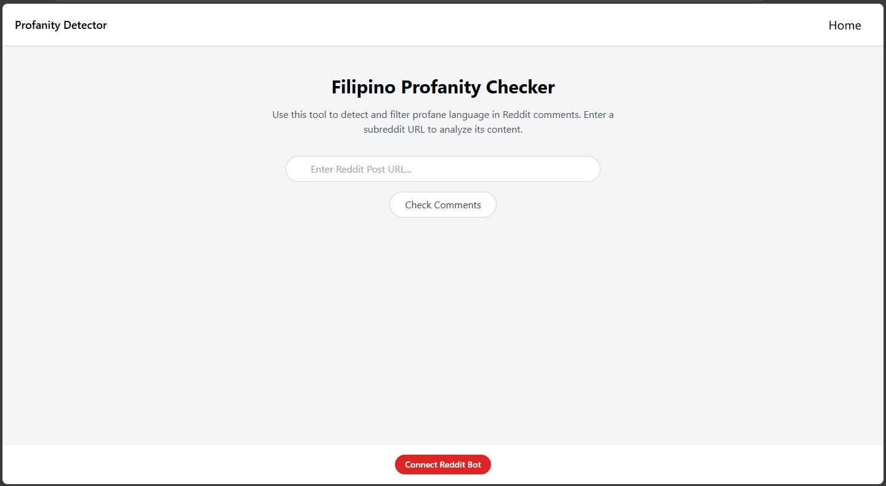

Thesis Project

Title: Profanity and Sentiment Detection in Filipino Social Media Comments Using Transformer-Based NLP Models
Tools Used: Python (Scikit-learn, Pandas), Excel, HTML, CSS, JavaScript
Project Overview
This project focuses on detecting profanity in Filipino social media comments using transformer-based models. It integrates tools like Python and web technologies to analyze and present the results.
Steps I Followed
- Data Gathering: I collected a dataset of Filipino social media comments, including both profane and non-profane examples. This served as the foundation for training the model.
- Data Cleaning: I removed unnecessary characters, corrected spelling, and standardized the format. Comments were labeled with profanity severity (non-profane, mild, moderate, high).
- Data Modeling: I used transformer models like BERT and XLNet to classify comments and fine-tuned model architecture to optimize performance.
- Training and Testing: I trained the model and evaluated it using accuracy, precision, recall, and F1-score.
- Deployment via Flask: The final model was deployed as a web application using Flask, allowing real-time detection of profanity in user input.